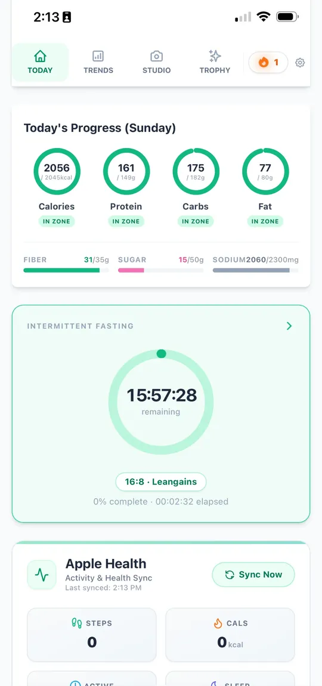
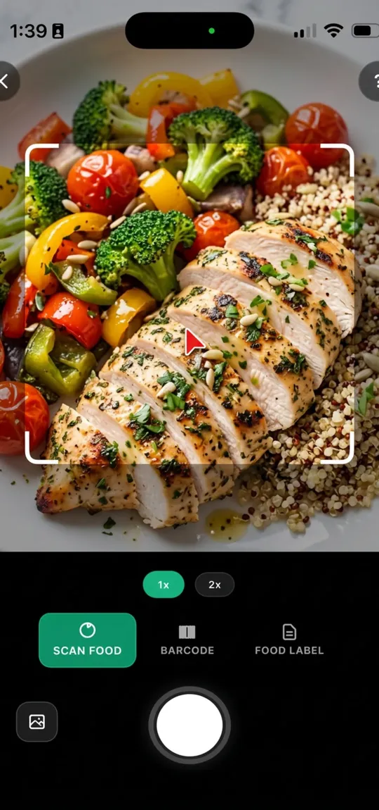
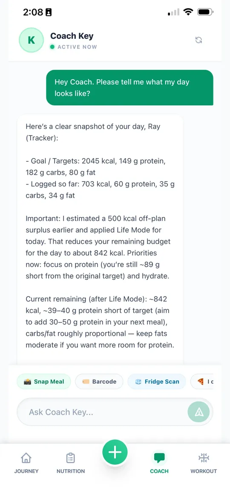
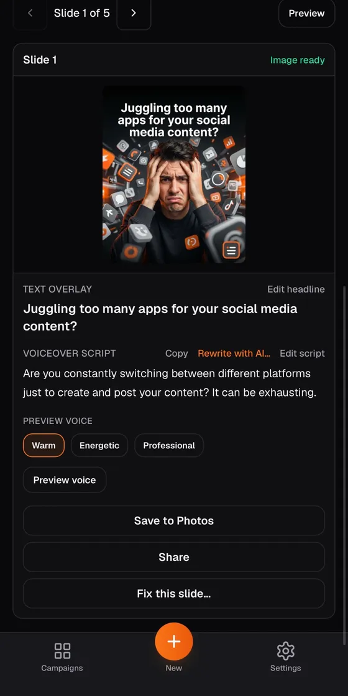
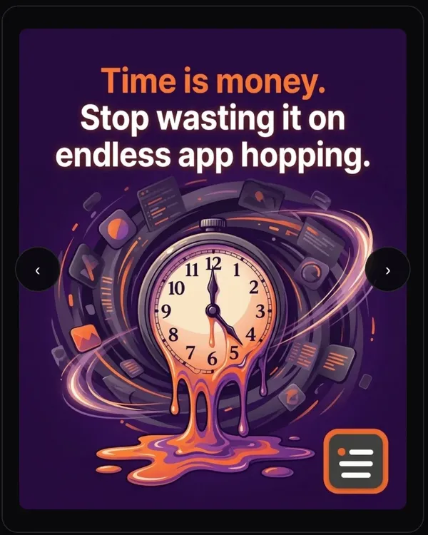
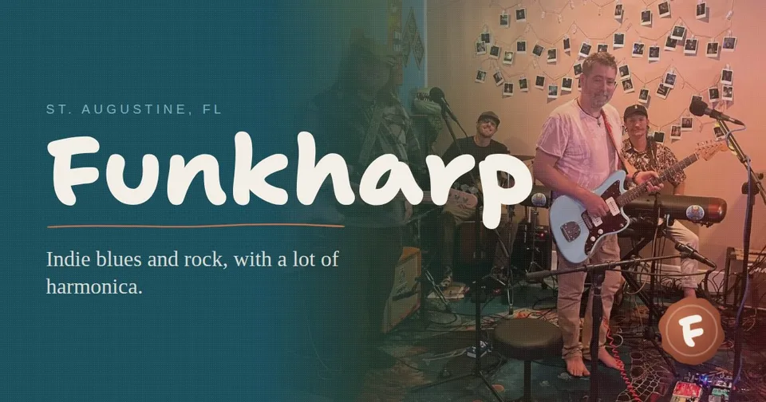
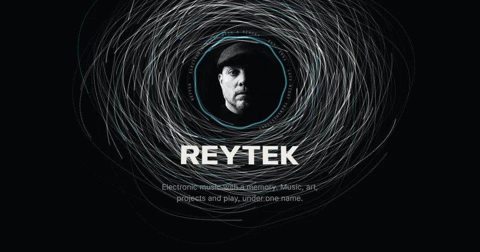

Built out of necessity.
I always wanted to build apps. I just never had the time.
I tinkered with projects for years. In 2024 I told myself it was now or never, saved up some money and bought my time. Thirty-five years of kitchens taught me discipline and organization, and that's exactly how I build.
-
Reytek kitchen · build ticket#001 · 20241× · AI nutrition & training appLive
KeyMacro
My AI nutrition and training partner.
The order
KeyMacro builds your meals and your workouts off one plan, so eating and training stop living in separate apps. Coach Key checks in and adjusts when real life happens, Snap logs a plate from a photo, and the Green Zone rewards consistency over perfect grams. The kitchen is still in there: Prep Station splits the week's cooking by station, just like running a line.
Prep → Fire → Plated
- ✓Order2024
- ✓Firebuilt in 7 months
- ✓Platedfirst sale
7 monthsconcept to first sale3 platformsweb, iOS and AndroidOn the plate

Today's progress 
Snap a meal 
Coach Key -
Reytek kitchen · build ticket#002 · 20251× · Social posting appLive
SlidePress
Three apps and hours, down to ten minutes.
The order
I was making social posts for KeyMacro and bouncing between three apps for every one. A post could take hours. Now I make it and publish it to every account in about ten minutes. It has so many moving parts and reviews to get through, and it still went to production in two months. It's the build I'm proudest of so far.
Prep → Fire → Plated
- ✓Order2025
- ✓Fire2 months
- ✓Platedin production
2 monthsto production10 minper post, everywhereOn the plate

The slide editor 
A finished slide -
Reytek kitchen · build ticket#003 · Client1× · Artist websiteServed
FunkHarp
A site for a friend who lives both lives too.
The order
Built for a buddy of mine in St. Augustine who is also a chef, and a great musician.
Prep → Fire → Plated
- ✓Ordera friend
- ✓Firebuilt in 2 weeks
- ✓Platedlive
On the plate

funkharp.com -
Reytek kitchen · build ticket#004 · 20261× · This hubYou're here
reytek1201
Music, art, projects and play, under one name.
The order
A light-trail vortex, a turntable you can scratch, and four decades on four lanes. Seeing how it's coming along, it might give the others some competition.
Prep → Fire → Plated
- ✓Order2026
- ✓Firebuilt in 2 weeks
- ✓Platedyou are here
On the plate

reytek1201.com You're looking at it. -
Reytek kitchen · build ticket#005 · Dec 111× · Path of Exile 2 companionOn the fire
POE Source
I've had this idea since POE2 came out.
The order
I never had the tools to build something of this caliber. Now I do. Free guides and tools for Path of Exile 2, and the campaign leveling guide is already live: every act, checkable step by step. The endgame companion is next, and I'm aiming to have it ready for the 1.0 launch.
Prep → Fire → Plated
- ✓Ordersince POE2
- 2Fireearly access, live
- 3PlatedDec 11 · 1.0